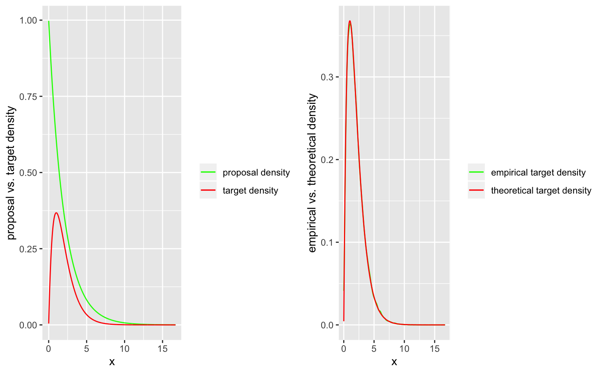
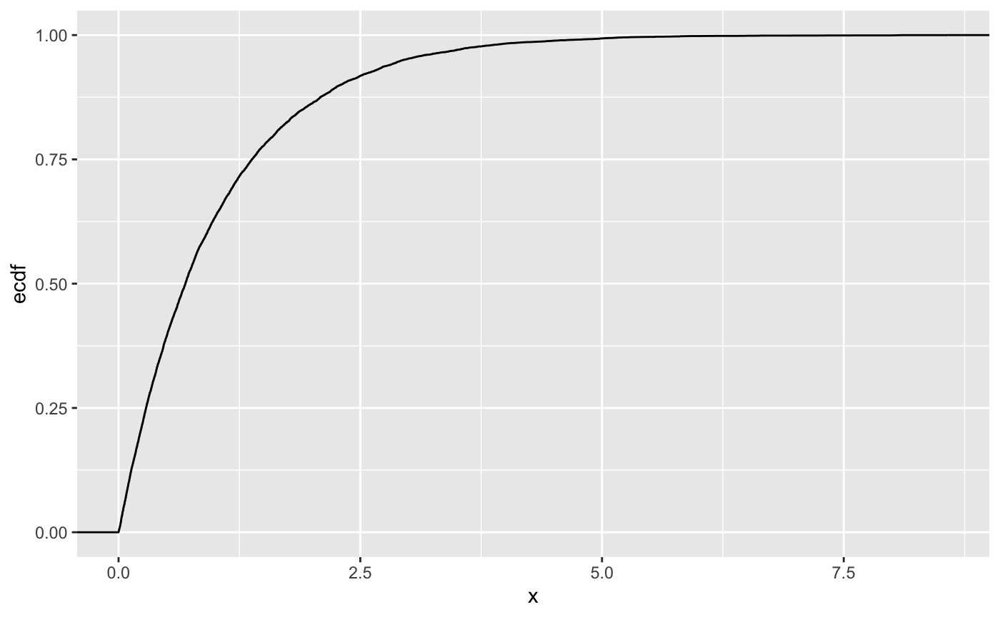
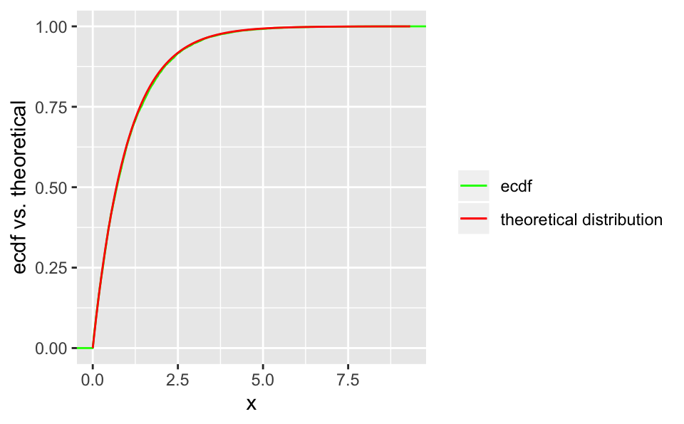
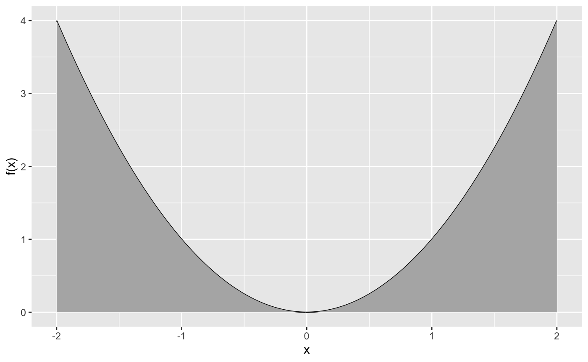
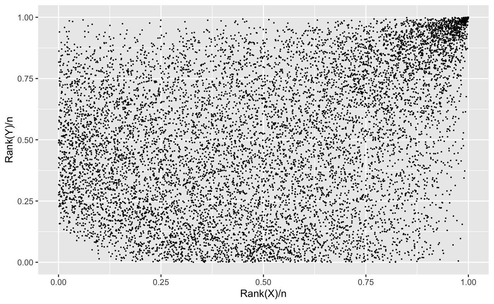

Vignette.Rmd## Loading required package: ggplotify## Loading required package: gridExtra##
## Attaching package: 'ACM'## The following object is masked from 'package:utils':
##
## dataThe function ARsim() draws from the random variable, which is specified by the density \(f\), using acceptance rejection sampling. The default proposal density is the exponential density with rate 1. If you want to use a different density you have to set the argument “exponential” to FALSE and specify your new proposal density and the corresponding inverse distribution function. Don’t forget to find an appropriate \(C\) such that \(f(x) \leq C*g(x)\).
Let’s look at an example:
C <- 1.6
lambda <- 0.5
f <- function(x) {x*exp(-x)}
ARsimulation <- ARsim(f, C, 100000, rate = lambda)The class of output of ARsim() is “AR”. We therefore added sepecified methods for plotting and also a summary function.

## [1] "1e+05 samples from the random variable, specified by the target density via acceptance rejection sampling."The function inv_sample() draws from the random variable, which is specified by the distribution F, using inverse sampling.
For this purpose, we define the inverse distribution function, we want to sample from. Addtionally, we define the classical distribution function to use some special features of the plot method for objects of the class “invsample”.
Lets take a look at an example again:
Finv <- function(x){-log(1-x)}
F_dist <- function(x){1-exp(-x)}
inv_samples <- inv_sample(Finv, N = 10000)
inv_samples_withF <- inv_sample(Finv, N = 10000, F_distribution = F_dist)
summary(inv_samples_withF)## [1] "10000 samples from the random variable, specified by the inverse distribution via inverse sampling."

The function int() performs a Monte Carlo integration of the function f.
## [1] 5.31494We would like to compare the sampled value to the theoretical one. It holds that: \[\int_{-2}^{2}f(x)dx = \int_{-2}^{2}x^2dx = \left[\frac{x^3}{3}\right]^{x=2}_{x=-2} = 2\frac{8}{3} \]
## [1] 5.333333Calling the plot and the summary method yields:
## [1] "By Monte Carlo integration, the integral of the function f from -2 to 2 was evaluated, yielding the value 5.31493969726341 . The corresponding asymptotic 0.95-confidence interval is given by [ 5.2854918798044 , 5.34438751472243 ]"
The plot.copula() function creates a plot of a 2 dimensional copula, using the empirical CDF. This is done by a rank transformation. This is an example of a copula for a 1-Fréchet (inverse Weibull) distribution.
#Example using 1-Fréchet
N <- 10000
R <- -1/log(runif(N))
U <- runif(N)
X <- R*U
Y <- R*(1-U)
data <- matrix(c(X,Y),ncol=2)We can set the class of data to be of class copula, then we can use the generic plot function.

The function rbi_norm() generates a bivariate normal distribution. Example
If unspecified, it will default as rbi_norm(N=10^5, rho, mean=0, var=1).
Creates a simple PDF analysis by combining plot and summary for a simulation vector. PDF is saved in current working directory